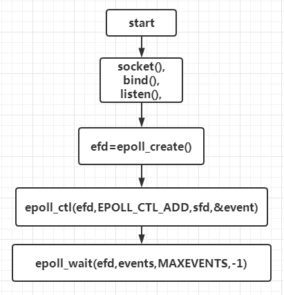
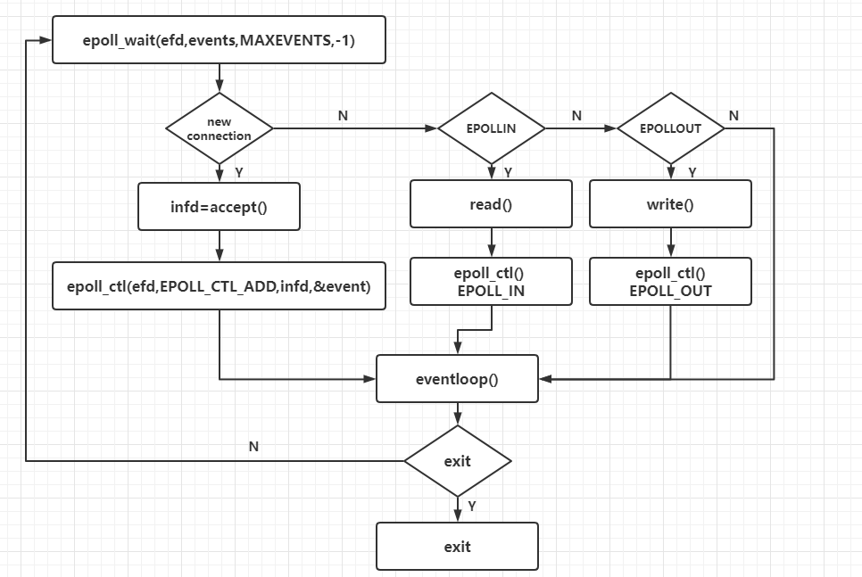

今天谈谈golang源码netpoll部分实现的细节和协程阻塞调度原理
epoll原理
epoll是linux环境下i/o多路复用的模型，结合下图简单说明epoll工作原理

上图说明了epoll生成描epoll表的基本流程，生成socket用来绑定和监听新的连接，将该socket放入epoll内核表，然后调用wait等待就绪事件。

当epoll wait返回就绪事件时，判断是否是新的连接，如果是新的连接则将描述符加入epoll表，监听读写事件。如果不是新的连接，说明已建立的连接上有读或写就绪事件，这样我们根据EPOLLOUT或者EPOLLIN进行写或者读操作，上图是echo server的基本原理，实际生产中监听EPOLLIN还是EPOLLOUT根据实际情况而定。以上是单线程下epoll工作原理。
golang 网络层如何封装的epoll
golang 网络层封装epoll核心文件在系统文件src/runtime/netpoll.go, 这个文件中调用了不同平台封装的多路复用api，linux环境下epoll封装的文件在src/runtime/netpoll_epoll.go中，windows环境下多路复用模型实现在src/runtime/netpoll_windows.go。golang的思想意在将epoll操作放在runtime包里，而runtime是负责协程调度的功能模块，程序启动后runtime运行时是在单独的线程里，个人认为是MPG模型中M模型，epoll模型管理放在这个单独M中调度，M其实是运行在内核态的，在这个内核态线程不断轮询检测就绪事件，将读写就绪事件抛出，从而触发用户态协程读写调度。而我们常用的read，write，accept等操作其实是在用户态操作的，也就是MPG模型中的G，举个例子当read阻塞时，将该协程挂起，当epoll读就绪事件触发后查找阻塞的协程列表，将该协程激活，用户态G激活后继续读，这样在用户态操作是阻塞的，在内核态其实一直是轮询的，这就是golang将epoll和协程调度结合的原理。
golang 如何实现协程和描述符绑定
golang 在internal/poll/fd_windows.go和internal/poll/fd_unix.go中实现了基本的描述符结构
1 | type netFD struct { |
netFD中pfd结构如下
1 | type FD struct { |
FD是用户态基本的描述符结构，内部几个变量通过注释可以读懂，挑几个难理解的
fdmu 控制读写互斥访问的锁，因为可能几个协程并发读写
Sysfd 系统返回的描述符，不会更改除非系统关闭回收
rop 为读操作，这个其实是根据不同系统网络模型封装的统一类型，比如epoll，iocp等都封装为统一的operation，根据不同的系统调用不同的模型
wop 为写操作封装的类型
pd 这个是最重要的结构，内部封装了协程等基本信息，这个变量会和内核epoll线程通信，从而实现epoll通知和控制用户态协程的效果。
下面我们着重看看pollDesc结构
1 | type pollDesc struct { |
pollDesc内部存储了一个unintptr的变量，uintptr为四字节大小的变量，可以存储指针。runtimeCtx顾名思义，为运行时上下文，其初始化代码如下
1 | func (pd *pollDesc) init(fd *FD) error { |
runtime_pollOpen实际link的是runtime包下的poll_runtime_pollOpen函数，具体实现在runtime/netpoll.go
1 | //go:linkname poll_runtime_pollOpen internal/poll.runtime_pollOpen |
可以看出通过pollcache.alloc返回*pollDesc类型的变量pd，并且用pd初始化了netpollopen，这里我们稍作停留，谈谈pollcache
1 | func (c *pollCache) alloc() *pollDesc { |
alloc函数做了这样的操作，如果链表头为空则初始化pdSize个pollDesc节点，并pop出头部，如果不为空则直接pop出头部节点，每个节点的类型就是*pollDesc类型，具体实现在runtime/netpoll.go中
1 | type pollDesc struct { |
其中rt和wt分别是读写定时器，用来防止读写超时。
fd为描述符指针，lock负责保护pollDesc内部成员变量读写防止多线程操作导致并发问题。
除此之外最重要的是rg和wg两个变量，rg保存了用户态操作pollDesc的读协程地址，wg保存了用户态操作pollDesc写协程地址。
举个例子，当我们在在用户态协程调用read阻塞时rg就被设置为该读协程，当内核态epoll_wait检测read就绪后就会通过rg找到这个协程让后恢复运行。
rg,wg默认是0，rg为pdReady表示读就绪，可以将协程恢复，为pdWait表示读阻塞，协程将要被挂起。wg也是如此。
所以golang其实是通过pollDesc实现用户态和内核态信息的共享的。
回到之前poll_runtime_pollOpen函数，我们就理解了其内部生成*pollDesc，并且传入netpollopen函数，netpollopen对应实现了epoll的init和wait，从而达到了用户态信息和内核态的关联。
netpollopen函数不同模型的实现不相同，epoll的实现在runtime/netpoll_epoll.go中
1 | func netpollopen(fd uintptr, pd *pollDesc) int32 { |
从而实现了epoll将fd添加至内核epoll表里，同样pd作为event的data传入内核表，从而实现内核态和用户态协程的关联。
runtime/netpoll_epoll.go实现了epoll模型的基本操作，详见源码。
golang如何将一个描述符加入epoll表中
传统的流程为:
生成socket–> bind socket–> listen–> accept
在golang中生成socket，bind，以及listen统一封装好了
Listen–> lc.Listen –> sl.listenTCP –> internetSocket
internetSocket –> socket –> newFD && listenStream
在newFD中完成了描述符创建，在listenStream完成了bind和listen。newFD只初始化了基本的结构，未完成pollDesc类型变量pd的初始化。
我们跟随源码查看listen的绑定流程
1 | func (lc *ListenConfig) Listen(ctx context.Context, network, address string) (Listener, error) { |
可以看出Listen函数返回的类型为Listener接口类型，其内部根据la类型调用不同的listen函数，这里查看listenTCP
1 | func (sl *sysListener) listenTCP(ctx context.Context, laddr *TCPAddr) (*TCPListener, error) { |
internetSocket内部调用socket生成描述符返回
1 | func socket(ctx context.Context, net string, family, sotype, proto int, ipv6only bool, laddr, raddr sockaddr, ctrlFn func(string, string, syscall.RawConn) error) (fd *netFD, err error) { |
socket函数做了这样几件事
1 调用sysSocket生成描述符
2 调用newFD封装描述符，构造netFD类型变量
3 调用netFD的listenDatagram方法，实现bind和listen
1 | func (fd *netFD) listenStream(laddr sockaddr, backlog int, ctrlFn func(string, string, syscall.RawConn) error) error { |
listenStream除了bind和listen操作之外，还执行了netFD的init操作，这个init操作就是将netFD和epoll关联，将描述符和协程信息写入epoll表
1 | func (fd *netFD) init() error { |
前文讲过fd.pfd为FD类型，是和epoll通信的核心结构，FD的Init方法内完成了pollDesc类型成员变量pd和epoll的关联。
其内部调用了fd.pd.init(fd)，pd就是fd的pollDesc类型成员变量，其init函数上面已经解释过了调用了runtime_pollOpen，runtime_pollOpen是link到
runtime/netpoll.go中poll_runtime_pollOpen函数，这个函数将用户态协程的pollDesc信息写入到epoll所在的单独线程，从而实现用户态和内核态的关联。
总结下bind和listen后续的消息流程就是：
listenStream –> bind&listen&init –> pollDesc.Init –> runtime_pollOpen
–> poll_runtime_pollOpen –> epollctl(EPOLL_CTL_ADD)
到此为止golang网络描述符从生成到绑定和监听，以及写入epoll表的流程分析完毕，下一篇分析accept流程以及用户态协程如何挂起，epoll就绪后如何唤醒协程。
感谢关注我的公众号